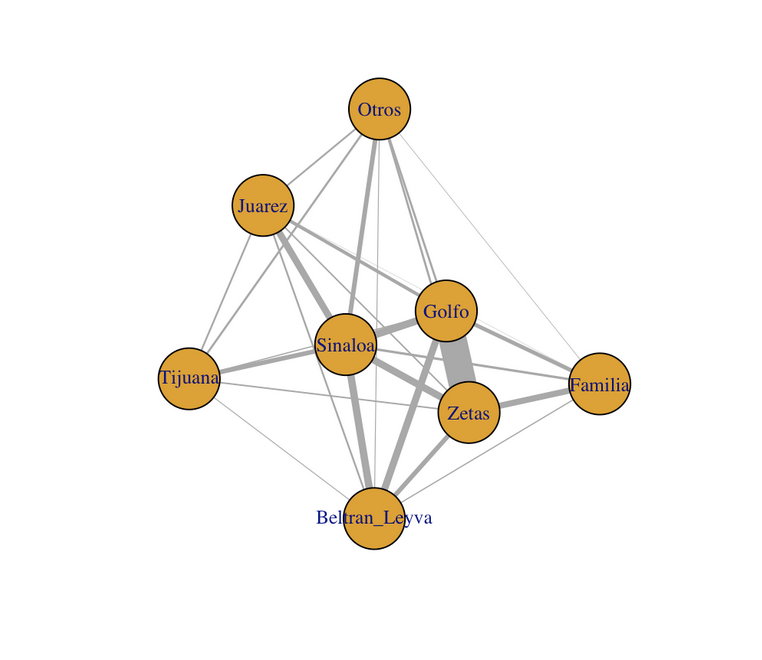
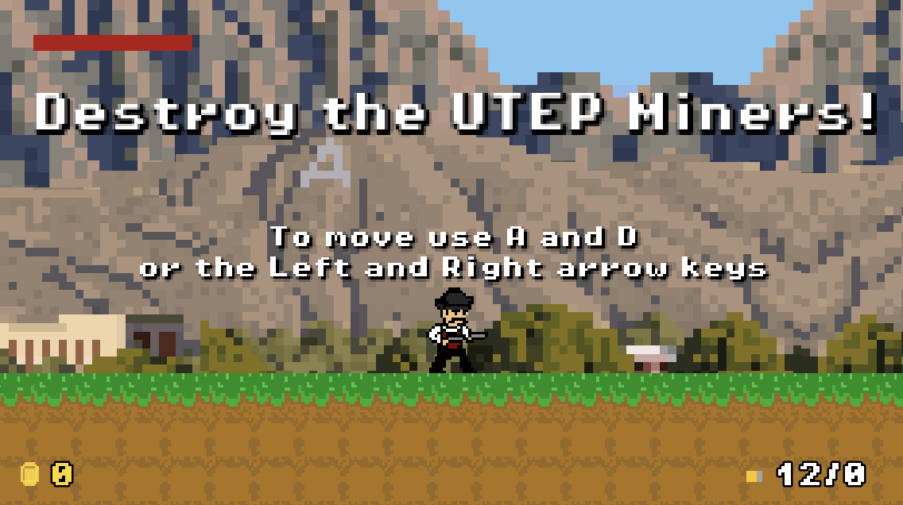
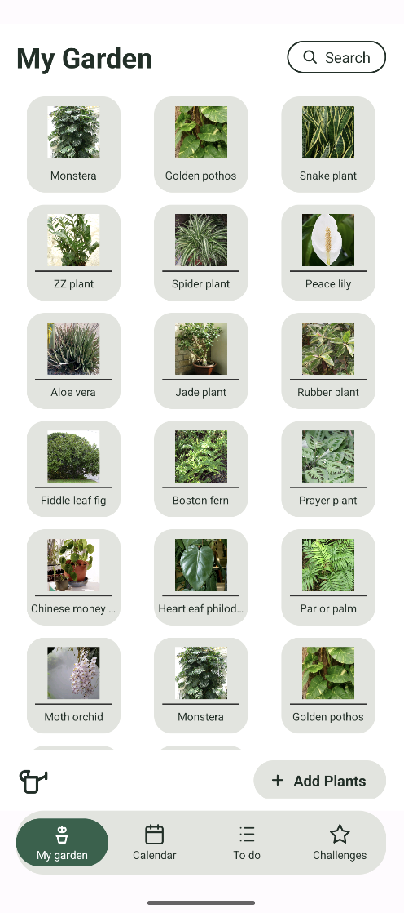

Cartel Municipality Network Analysis
Using the public dataset Mexico Drug Traffic Activities, I applied R-based network
statistics to analyze a one-mode undirected weighted graph. By computing betweenness
and eigenvector centrality, I identified which cartels exert the greatest control
within the network based on their connectivity. These findings were framed as
actionable recommendations for law enforcement, highlighting which cartel removals
would have the greatest disruption to the overall network.

Pistol Peters — NMSU Side-Scroller Game
As part of a collaborative team project, I co-developed a 2D side-scrolling platformer
built in Godot using C++, inspired by classic games like Mario. The player controls
NMSU's mascot Pistol Pete, navigating levels while shooting at enemies drawn from
NMSU's rival schools — UTEP and UNM — culminating in boss fights against
the UNM Lobo and the UTEP Miner. The project was managed collaboratively via GitHub
and includes original game audio, sprite design, and custom boss logic.

Plant Care — Plant Tracker and Care Information Mobile Application
Working with a team of two other undergraduate students we created a plant-care app built
in Android Studio using a mix of Kotlin and Java. We felt that current apps within this genre were
fragmented and that users were missing a consolodated app that had a current plant inventory, care information,
calendar, to-do list, along with a few gaming-like features. I led the development of the code base with an emphasis
on the home screen and adding plant features. This app was developed thorugh three user studies where we sought feedback
on design, usability, and importance of features. The results from these studies culminated in an emphasis
on the tools and information regarding plant care. These studies also asked users to shoose between six designs
and the prefered designs were included and iterated upon in this app.